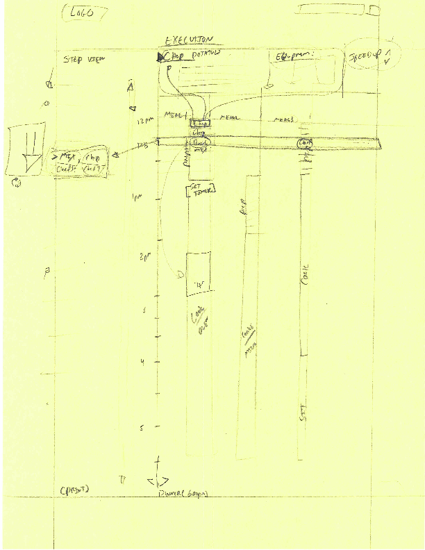
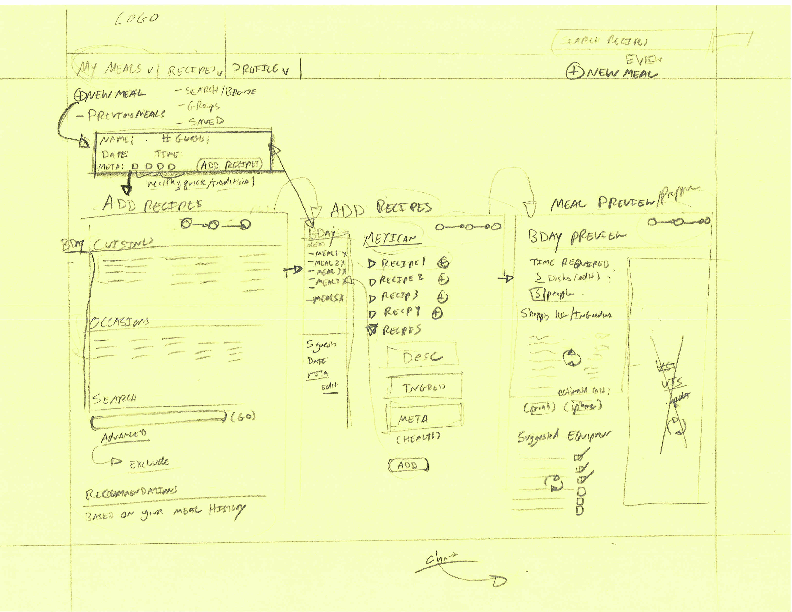

Wireframes 1
Rough Sketches
Purpose
We developed rough wireframes to ideate on layout of the page, including content, interaction design, and navigation.
Rough sketch of the Meal Execution visualization
Rough sketch of Site Flow
